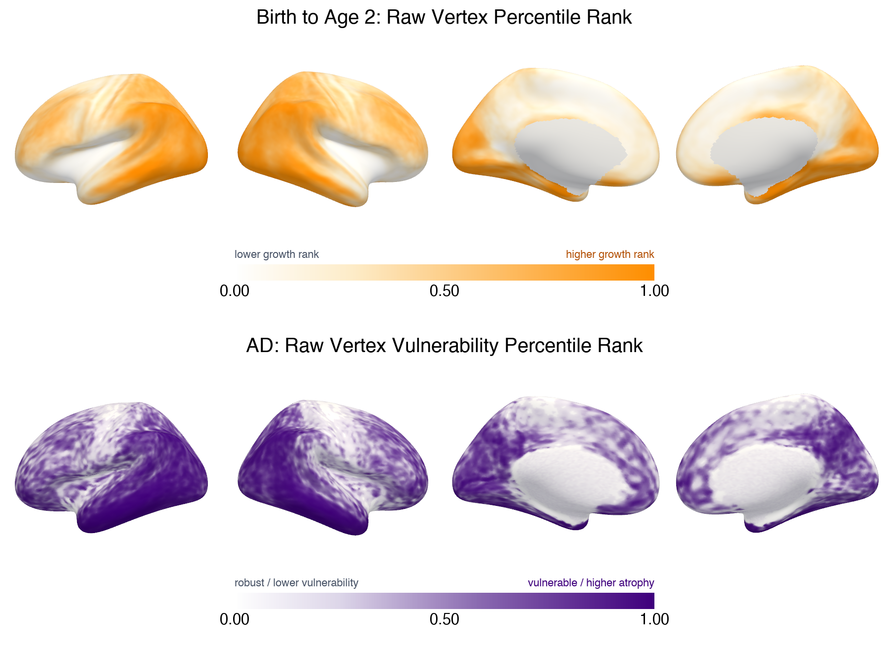

Infant development
Build cortical maps of surface-area expansion during early life.
Could the parts of the cortex that develop later be especially vulnerable to change later in life? With Muriah Wheelock, I study this question by comparing patterns across the cortical surface.
The “last in, first out” idea asks whether late-developing brain regions are among the first to show vulnerability in aging and neurodegeneration.
The challenge is spatial: neighboring cortical regions tend to resemble each other. A convincing comparison must account for that structure instead of treating every location as independent.
Build cortical maps of surface-area expansion during early life.
Bring adult aging and disease maps into the same cortical space.
Compare matched cortical parcels after transforming each map by rank.
Ask whether an association is unusual given the smoothness and geography of cortex.
The steps describe the analysis. The paired surfaces below show the source patterns behind one parcel-level comparison.

Infant surface-area expansion and adult change maps are placed on a common cortical representation and summarized across matched parcels. Analyses inspect both all Gordon-333 parcels and the named-network subset when unassigned parcels are excluded.
Map values are rank transformed before comparing their spatial patterns. This focuses the analysis on relative cortical ordering and limits the influence of extreme values.
Spatial null maps preserve important features of cortical autocorrelation. Observed associations are compared against those null distributions, with multiple comparisons accounted for across related tests.
Complementary analyses examine how spatial patterns in biomarker maps relate to developmental and adult maps. The current workflow includes spatial basis methods, multivariate summaries, and comparisons among interpretable cortical profiles; these are exploratory tools, not a claim of mechanism.
This page presents the research question and analytic approach while the study is ongoing. I’ll add a paper and results here when they are ready to share.